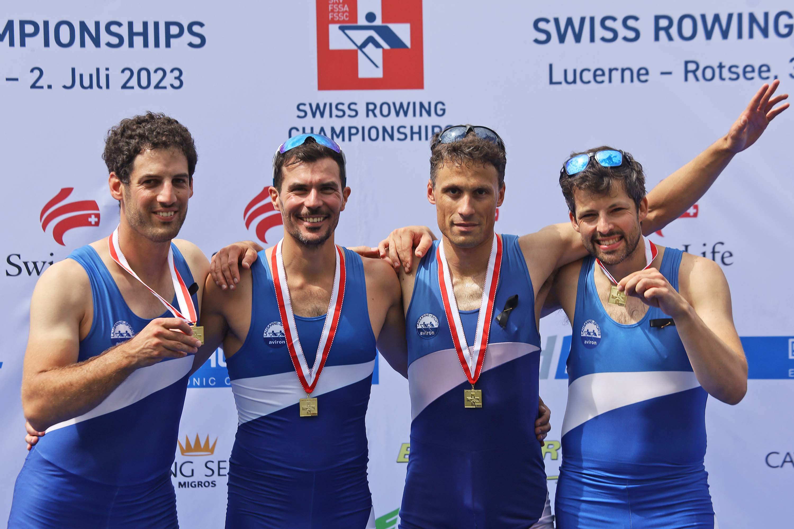
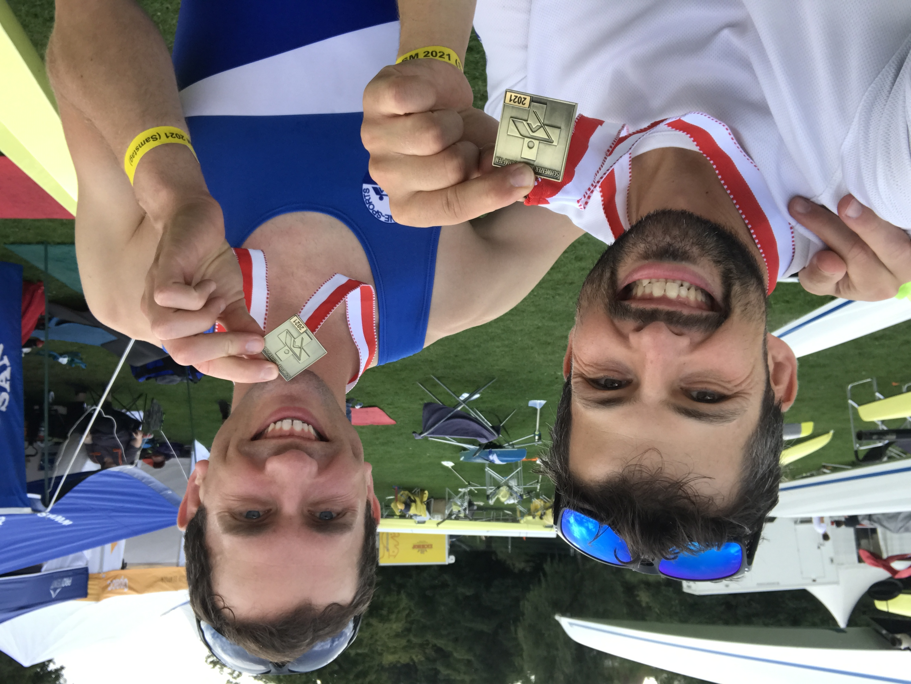

Other activities¶
Sport¶
Tour du Léman¶
Tour du Léman
Longest row race in the world on closed water
Geneva, Switzerland
Finisher 09.2022
Finisher 09.2023
Récit 2023
Avant
Préparer le tour du lac, c’est déjà une aventure en soi : l’équipe a beaucoup ramé au printemps et à l’été, et, nouveauté de l’année, s’est aussi lancée dans de folles sessions de “ petits jeux “ matinales, depuis le LSA mais aussi la Normandie, Venise, la Bretagne… Les tests yolette, la Bilac, l’excel de Jean-David, il en a fallu du temps et de l’énergie pour arriver à la semaine du tour, bien remplie, même avant le tour. Et là, plus les heures défilent, plus ça s’accélère. Pour moi, ramer au tour du lac c’était aussi revenir à Lausanne. À peine sortie de ma journée de train jeudi soir, je me lance avec Marie à la conquête des éléments de la liste de courses. 35 farmers, 3L de coca, 15L d’eau et des centaines de grammes de fruits secs plus tard, nous sortons (sans les pompotes, oups !). Vendredi, nous nous retrouvons au club à 9h : démontage du bateau, quête au matériel à travers tout le club, nous sommes prêts à partir à 11h, comme prévu ! À Genève, nous remontons Libellule et lui ajoutons des pare-vagues, un numéro, et… plein de nourriture scotchée à l’intérieur. Que ce soit dit, on ne mourra pas de faim. Le soir, les organisateurs ne sont pas tranquilles face aux prévisions météo. Le Joran pourrait se lever le samedi vers 20h, et avec lui de bonnes vagues sur la côte française. Ils pensent modifier le parcours : ça sera Genève-Rivaz-Genève, 20km de moins que le tour classique, mais un bon 140km tout de même. Après une nuit pas tout à fait reposante dans l’abri PC, nous revenons au bateau pour un embarquement à 6h40. Nous avons tout de même le temps de revenir à terre après avoir garé Libellule dans le port pour un dernier café… On sait ce qui nous attend et pourtant je suis assez stressée, de n’avoir pas assez bien dormi, de n’être pas assez entraînée. Oh well. Au moins, contrairement à l’année dernière, ce matin-là il ne pleut pas !
Natacha
Pendant : de Genève à Lausanne
À 8 heures précises, la sirène a retenti et nous sommes partis ! Les premiers 850m nous ont éloignés du club de la Société nautique de Genève (SNG) vers la ville de Genève. Avec un mini entraînement de virage pour Léman-sur-Mer, Marie nous a emmenés au coin de notre premier “ waypoint “ et nous sommes partis vers le grand lac Léman. Les deux premières heures à parcourir les 20km entre Genève et Nyon ont filé à toute allure. Nous avons trouvé un bon rythme de 22 coups par minute et nous nous y sommes tenus, en changeant de barreur toutes les 30 minutes pour donner un peu de repos à nos mains et à nos jambes. Malgré le repos physique, c’était en fait assez fatigant pour le barreur, car nous étions très occupés avec la navigation, les repas et le maintien du moral. C’est avec grand plaisir qu’à 55km (un peu moins de 6 heures), nous nous sommes approchés de notre ville natale, Lausanne, accueillis par notre équipe d’encouragement personnelle.
Annie
Pendant : de Lausanne à Lausanne
Après un peu plus de cinq heures de rames, ça y est : notre maison. L’arrivée à Lausanne me fait réfléchir au parcours déjà ramé et aux défis auxquels on a été confrontés. Malgré une très bonne préparation, le début de ce tour était dur pour moi. Je me sentais fatigué, et peu importe le nombre de “Farmers” que je mangeais, je me sentais peu en forme. Mon tour à la barre a beaucoup changé : j’ai pu enfin manger nos fabuleuses pâtes, et mon corps réagit mieux maintenant. Le seul inconvénient qui me reste est la position de la nage qui est très serrée, et un bateau concurrent qui nous suit de près. Maintenant à Lausanne, le moral monte beaucoup grâce à nos spectateurs locaux du club. Cerise sur le gâteau, peu après, à la CGN, on se retrouve avec nos chers amis qui vont nous donner un peu de vent dans le dos pendent 30km (uniquement au niveau moral, comme vous le verrez bientôt). Merci Elena, Leonardo, Clara, Mathilde, et Elleke. C’est vrai, Marie et Elena ont produit un miracle, ma femme se retrouve à la barre d’un bateau d’aviron !! Pendant un bon moment, leur présence nous laisse oublier la fatigue et les petites douleurs ainsi que la compétition qui nous chasse. Et personnellement je trouve très précieux de créer ce souvenir avec ma femme. Par conséquent, on s’éloigne vite de la compétition et Rivaz s’approche à grands pas dans ces eaux connues. On tourne le bateau à l’arrêt, et, le plus important, on est déjà à la moitié du tour. Mais pas de chance, l’eau devient noire et un vent sud-ouest se lève et on se trouve face au vent. On s’approche du bord au cas où, et je commence à me dire que ce serait dommage si notre tour s’arrêtait là. Mais encore une fois, les eaux connues nous apaisent, et bientôt on se retrouve au niveau de Lausanne sur un lac calme avec d’autres bateaux du club autour de nous. C’était chouette que vous soyez là !
Tom
Pendant : de Lausanne à Genève
L’orage qui agitait la surface lémanique à notre retour de Rivaz semble s’être calmé, ce qui permet au lac de devenir de plus en plus lisse. Le plaisir revient petit à petit : le lac commence à nous renvoyer le reflet de nos pelles sans déformation. Au revoir, les derniers bateaux qui nous ont tenu compagnie, c’était sympa de vous voir ! Nous continuons de ramer alors que le soleil s’apprête à tirer sa révérence, tout en couvrant le ciel de son invisible manteau aux couleurs des crépuscules de septembre.
Magique ! La fatigue se fait de plus en plus sentir. Certains ne veulent plus que des compliments sur la rame : il n’est plus temps de se corriger. Morges, puis St-Prex arrivent. Enfin Rolle. Les quelques encouragements reçus depuis le ponton nous font plaisir et redonnent un peu d’énergie. Nous constatons que le jet d’eau est allumé au loin. Nous nous disons que nous pourrions arriver avant qu’il ne s’éteigne. Lorsque la nuit s’établit, nous sommes déjà prêts : les survêtements sont en place, ainsi que les LEDs blanches sur le mât et cyalumes, ces barrettes lumineuses vertes et rouges, sur les rames de proue. Barrer demande de plus en plus de concentration car on ne voit pas très bien. Nous constatons à deux reprises que nous sommes du mauvais côté de poteaux rouges ! Au moins, nous avons évité le poteau lui-même… Les kilomètres défilent. Lentement, sûrement, inlassablement. Les nages successives décident d’augmenter la cadence sans mot dire. Mais tous se rendent comptent de cet état de fait, qui à la barre, en regardant le compte-coup placé à la nage, qui de par son ressenti, qui en comptant les coups (ça occupe le cerveau quand on rame longtemps…), qui encore en sentant la fatigue qui s’établit plus vite qu’auparavant. Ceux qui regardent le compte-coups et ceux qui ont compté savent que la cadence est d’au moins vingt-quatre coups par minutes. Cette cadence restera jusqu’au bout. Nyon (à dire très vite) passe à toute vitesse et Versoix approche. Nous naviguons presque uniquement au GPS à ce moment. Un grand voilier glissant tous feux éteints non loin de nous nous fait un peu peur, mais il ne croisera pas notre route. Ouf ! C’est le dernier tour de barre et la demie-heure de ligne droite qui traverse la rade en piquant sur la Société Nautique de Genève. Un coup de klaxon. C’est fait. Il est 22h03. Le jet d’eau se dresse encore fièrement.
Jean-David
Après
Un tour, ou un aller-retour. Et après ? Une extraction nocturne plus ou moins acrobatique de ce bateau que l’on n’a plus quitté depuis si longtemps au point de faire au moins un peu corps avec lui, encore grisés par la dernière demi-heure et ses séries, qui coûtent au corps, mais sont magiques, car chacun donne toute l’énergie qui lui reste pour l’équipe. Douche chaude, massage, pâtes, et nuit dans l’abri de la protection civile, bercés par le doux ronronnement de rameuses et rameurs fatigués. Démonter le bateau, faire l’inventaire des stocks en trop - pour ajuster l’an prochain (oui, oui, ça parle déjà de la prochaine édition) les quantités d’eau et de nourriture –, échanger avec les autres rameurs un peu, avec ses coéquipières et coéquipiers surtout. Et le retour au club pour ranger le bateau et les rames dans le hangar, pour boucler la boucle, vraiment. Cette année, boucler l’aventure, c’était partager ces instants en équipe, mais aussi avec celles et ceux qui nous ont accompagnés en chemin : sur l’eau, le jour J, par vagues, amples et douces - de celles qui portent et apaisent - de Vidy à Rivaz et de Rivaz à Préverenges ; lors de sorties en amont, baignés dans la lumière dorée du soleil qui se lève à travers un ruban de nuages ; au café le matin, pour discuter ; armés de briques de lait et balais en guise de poids pour les fameux “ petits jeux “ d’Adeline, à distance ; ici et là dans le club, pour parler préparation, longueur de rames ou choix de bateaux. Boucler le tour, c’était aussi retrouver ces précieuses têtes connues, qui nous font nous sentir “ à la maison “ au club. Car au final, c’est peut-être pour ça que certains d’entre nous tournons autour du lac ou partons à l’aventure : pour le plaisir de le partager à plusieurs et créer des souvenirs communs, qui deviennent ensuite de formidables histoires à (se re)raconter. C’est peut-être même pour ça que certains d’entre nous ramons, plongeons nos rames d’un geste commun dans les eaux sombres du Léman, puis effleurons sa surface délicate pour voler d’un même élan, toujours un peu plus loin, ensemble. Peut-être bien. Pour moi, c’est le cas, je crois.
Merci aux incroyables membres de cette incroyable équipe - Annie, Jean-David, Natacha et Tom - et à celles et ceux, nombreux, qui nous ont accompagnés en chemin.
Marie
Swiss Champions Rowing¶
Silver Medal Swiss Champion Rowing, Master Men B 4x
Luzern, Switzerland
07.2025Silver Medal Swiss Champion Rowing, Master Men B 4x
Luzern, Switzerland
07.2024Bronze Medal Swiss Champion Rowing, Master Men B 8+
Luzern, Switzerland
07.2024Swiss Champion Rowing, Master Men B 4x
Luzern, Switzerland
07.2023
Bronze Medal Swiss Championships Rowing, Master Men A 2x
Luzern, Switzerland
07.2021
{kind=link}
{kind=link}
Field hockey¶
Goalkeeper first squad
Eindhoven area, The Netherlands
2003 - 2015Squad member various youth squads
Eindhoven area, The Netherlands
1991 - 2003
Volunteering¶
Assistant group leader tour skiing
Alpine Club Switzerland
Section Diablerets, Lausanne, Switzerland
2024 - current
Responsibilities: tour planning, assurance of safetyMember Commission leisure rowing
Lausanne Sport Aviron, Lausanne, Switzerland
2019 - current
Responsibilities: group leader outing supervisors leisure rowing, planning and execution leisure travelsOuting supervisor leisure rowing
Lausanne Sport Aviron, Lausanne, Switzerland
2019 - current
Responsibilities: team formation, coaching, assurance of safetyPresident Hora Est
PhD and postdoc association for Mechanical and Biomechanical Engineering
Eindhoven University of Technology, Eindhoven, The Netherlands
2014 - 2015
Responsibilities: design and execution social events and career eventsBuddy of autistic first year student
Eindhoven University of Technology, Eindhoven, The Netherlands
2008 - 2009
Responsibilities: weekly meetings with to goal to enhance well-being and study effectiveness of autistic studentField hockey equipment commissioner
Eindhoven area, The Netherlands
2003 - 2007
Responsibilities: purchase and maintenance of goalkeeper equipment (budget: 8000 euro per year)Trainer field hockey
Eindhoven area, The Netherlands
2005 - 2010
Responsibilities: design and execution specialized goalkeeper training
Student jobs¶
Tutor of high school students in physics and math
Eindhoven area, The Netherlands
09.2004 - 09.2008Sales employee and driver for an industrial rental company
Boels rental
Eindhoven area, The Netherlands
09.2003 - 09.2007Shift supervisor hospitality
Maison van den Boer at football stadium of PSV
Eindhoven area, The Netherlands
09.2001 - 09.2004